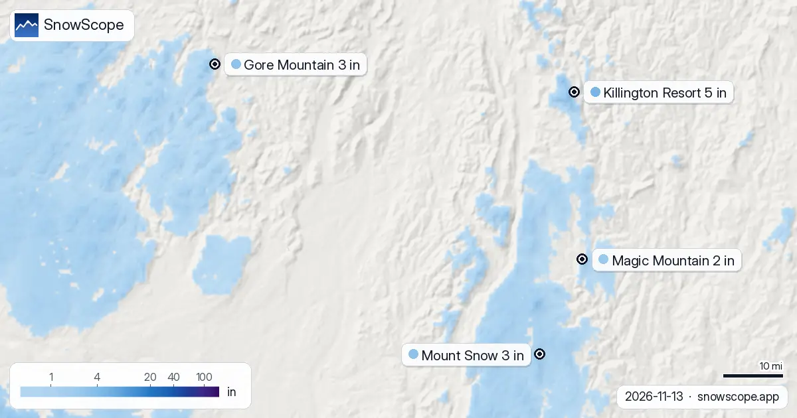

Nieve nueva en el noreste de EE. UU. comparada: Bolton Valley Resort en cabeza con 4 in en 72 horas (15 de noviembre)
La superficie blanca ha cambiado: 6880 sq mi (17.820 km²) el 13 de noviembre, 6039 sq mi (15.640 km²) hoy y 382 sq mi (990 km²) esperados el 18 de noviembre. Bolton Valley Resort sumó 4 in (10 cm) de nieve nueva en las últimas 72 horas, 2 in (5 cm) de ellos en las últimas 24. Eso deja unos 3 in (8 cm) en las pistas altas, según nuestro modelo de nieve. El trabajo de campo en montañas secas enseña una cosa: el mapa es un comienzo, la ladera tiene la última palabra.
Consulta la previsión de nieve en tiempo real de Bolton Valley Resort en la app SnowScopeEspesor de nieve, alertas de nieve polvo y mapa 3D, gratis.
Dónde cayó la nieve nueva
A otras estaciones también les fue bien: Mount Snow, Stowe y Stratton sumaron 4 in (10 cm), 4 in (10 cm) y 4 in (10 cm) en las últimas 72 horas.
En la región, 41 de 111 estaciones en el noreste de EE. UU. tienen nieve arriba hoy, y nuestro modelo encuentra 6039 sq mi (15.640 km²) de suelo blanco.
| Estación | Espesor de nieve | Nieve nueva, 72 h | Previsto, próximos días | Cota máx. |
|---|---|---|---|---|
| Bolton Valley Resort | 3 in (8 cm) | 4 in (10 cm) | 0 in (1 cm) | 3117 ft (950 m) |
| Mount Snow | 3 in (8 cm) | 4 in (10 cm) | 0 in (0 cm) | 3586 ft (1093 m) |
| Stowe | 3 in (8 cm) | 4 in (10 cm) | 0 in (1 cm) | 3648 ft (1112 m) |
| Stratton | 4 in (10 cm) | 4 in (10 cm) | 0 in (0 cm) | 3881 ft (1183 m) |
Arriba, en medio, abajo
De la base a la cima de Bolton Valley Resort: 0 in (1 cm) en la base (1558 ft / 475 m), 2 in (6 cm) a media montaña (2336 ft / 712 m) y 3 in (7 cm) en la cota alta (3117 ft / 950 m).
El 17 de noviembre la cota de congelación en Bolton Valley Resort sube a 0 ft (0 m)-9285 ft (2830 m), más alta que la cima de los remontes (3117 ft (950 m)): cuenta con lluvia o nieve húmeda en todas las pistas.
Qué esperar después
Entre hoy y el 18 de noviembre esperamos 0 in (1 cm) en Bolton Valley Resort y 0 in (1 cm) en Stowe.
Las previsiones a varios días pueden cambiar: vuelve a mirar el mapa el día antes de viajar.
Lo que vieron las estaciones
El 13 de noviembre, la estación de medida Lake Pleasant 2.3 WSW (1778 ft / 542 m) midió 4 in (9 cm) en el suelo, con 4 in (9 cm) de nieve nueva en 24 horas. En la estación de medida Shrewsbury 0.8 W (1486 ft / 453 m), el sensor marcaba 3 in (8 cm) de nieve en el suelo el 13 de noviembre, 3 in (8 cm) de ellos nuevos en 24 horas. El 13 de noviembre, la estación de medida Rome 4.8 SSE (561 ft / 171 m) midió 2 in (5 cm) en el suelo, con 2 in (5 cm) de nieve nueva en 24 horas.
Nuestras cifras de las estaciones de esquí son estimaciones para las pistas altas. Las de las estaciones de medida son medidas reales, pero de un solo punto y en la fecha indicada.
Seguridad y peligro de aludes
Tras una nevada, el viento forma placas en las laderas resguardadas. Fuera de pista, los primeros días piden más prudencia.
Consejos para esquiadores
- La nieve nueva tiene una fecha de caducidad corta: las primeras horas. Madrugar gana.
- Las laderas sur reciben más sol y se funden antes; las laderas norte en altura guardan su nieve más tiempo.
- Antes de salir fuera de pista o de travesía, lee el boletín oficial de aludes (enlaces abajo).
- Nieve en el mapa no significa que la estación esté abierta: consulta remontes y fechas de apertura en su web.
- Activa una alerta de nieve polvo en la app SnowScope para saber cuándo Bolton Valley Resort recibe nieve nueva.
Sobre estas cifras
Los espesores de nieve de las estaciones son la nieve más profunda en las pistas altas según el modelo de nieve de SnowScope (unos 1 km, cálculo del 15 de noviembre); son estimaciones para una zona, no una medida en un punto. Los valores de las estaciones de medida son medidas en la fecha indicada. Las previsiones pueden cambiar. Consulta siempre el boletín oficial de aludes antes de salir fuera de pista.
Boletines oficiales de aludes: Mount Washington Avalanche Center
Citar este informe
Para investigación, docencia o prensa: cifras y gráficos reutilizables libremente bajo CC BY 4.0 con esta cita.
SnowScope (2026), Nieve nueva en el noreste de EE. UU. comparada: Bolton Valley Resort en cabeza con 4 in en 72 horas (15 de noviembre), https://snowscope.app/blog/es/2026/11/us-northeast-bolton-valley-resort-fresh-snow-powder-alert-15-november-2026.html, consultado el 2026-11-15
SnowScope (Atlas Labs). (2026, November 15). Nieve nueva en el noreste de EE. UU. comparada: Bolton Valley Resort en cabeza con 4 in en 72 horas (15 de noviembre). SnowScope snow reports. https://snowscope.app/blog/es/2026/11/us-northeast-bolton-valley-resort-fresh-snow-powder-alert-15-november-2026.html
BibTeX
@misc{snowscope2026usnortheastboltonvalleyr,
author = {{SnowScope (Atlas Labs)}},
title = {Nieve nueva en el noreste de EE. UU. comparada: Bolton Valley Resort en cabeza con 4 in en 72 horas (15 de noviembre)},
year = {2026},
month = nov,
howpublished = {\url{https://snowscope.app/blog/es/2026/11/us-northeast-bolton-valley-resort-fresh-snow-powder-alert-15-november-2026.html}},
note = {Published 2026-11-15 20:24 UTC; accessed 2026-11-15}
}· CC BY 4.0 · Métodos, datos y herramientas →
Sigue Bolton Valley Resort
Gratis: un aviso cuando llega la nieve y la previsión cada mañana.
Más partes de nieve

¿Dónde nevará en el noreste de EE. UU. entre el 13 de noviembre y el 26 de noviembre, y cuánto? Preguntamos a los dos modelos globales que llegan a …

2 de 4: son las estaciones en el noreste de EE. UU. claramente por encima de lo normal hoy. ¿Cómo va este invierno hasta ahora? Pusimos la nieve de …

¿Es un buen comienzo de invierno en el noreste de EE. UU.? La nieve de hoy en 4 estaciones en el noreste de EE. UU., frente a la misma fecha de cada …